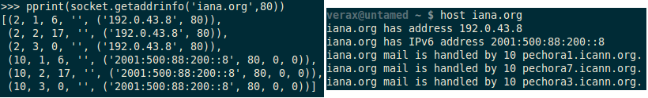
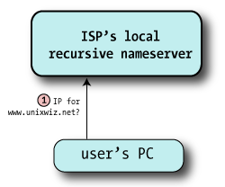
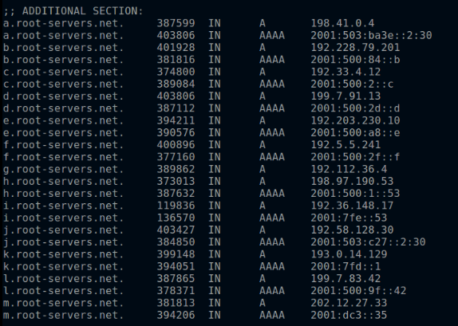
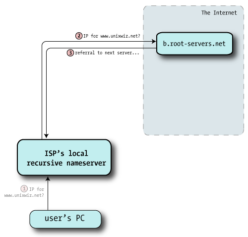
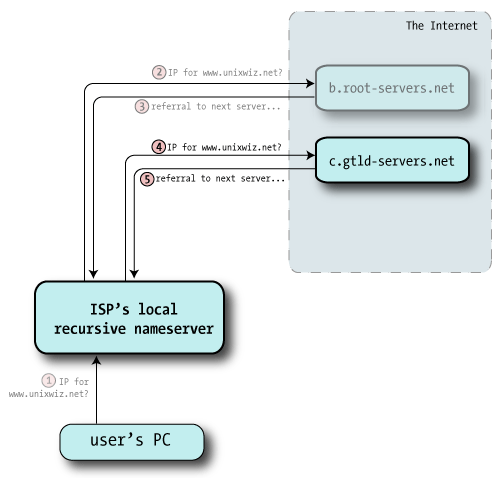
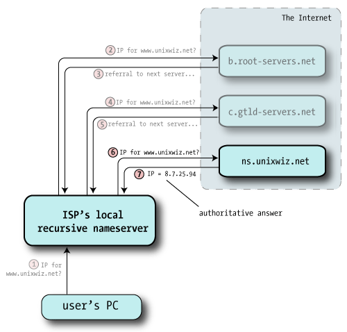
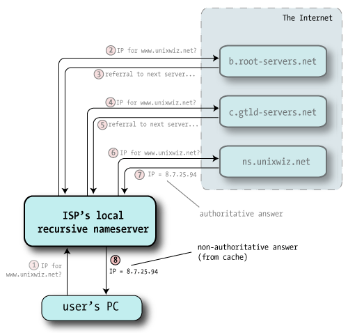

Domain Name System
| DNS Protocol | |
|---|---|
| Purpose | Resolve hostnames by returning IP addresses |
| Standard | RFC 1034 and RFC 1035 |
| Runs atop | UDP/IP and TCP/IP |
| Port number | 53 |
| Libraries | dnspython (dnspython3 for python 3.x) |
What is DNS?
“The Domain Name System, or DNS, is one of the Internet’s fundamental building blocks. It is the global, hierarchical, and distributed host information database that’s responsible for translating names into addresses and vice versa, routing mail to its proper destination, and many other services.”
- Bind9.net
- The Domain Name System (DNS) is the scheme by which millions of Internet hosts cooperate to answer the question of what hostnames resolve to which IP addresses.
- The DNS is the mechanism which translates names like iana.org into IPv4 addresses like 192.0.43.8, or 2001:500:88:200::8 if you are already enjoying IPv6.

DNS - Terminology
Before we see how DNS operates, we need to be aware of the terminology used in DNS, atleast software wise.
Resolver
- Resolver is the client part of the DNS client/server system: it asks the questions about hostnames. The resolver is usually a small library compiled into each program that requires DNS services, and it knows just enough to send questions to a nearby nameserver.
- Resolvers are usually very small and dumb, relying on the servers to do the heavy lifting.
Recursive Nameserver
- This is a nameserver that’s willing to go out on the internet and find the results for zones it’s not authoritative for, as a service to its clients. Not all nameservers are configured to provide recursive service, or are limited to just trusted clients (say, an ISP may provide nameservice only to its customers).
- The raw IP addresses of recursive servers are specifieds on the client, either manually or by using DHCP.
- Usually an ISP provides recursive DNS server address but if people are unhappy with their ISP’s DNS behavior/performance, they can configure to use third party servers, like the servers at 8.8.8.8 and 8.8.4.4 run by Google.
Nameserver
- This is server software that answers DNS questions.
- Sometimes a nameserver knows the answer directly (if it’s “authoritative” for the zone), other times it has to go out to the internet and ask around to find the answer (if it’s a recursive nameserver).
- There is wide variety of software that performs this service: BIND, PowerDNS etc.
Authoritative Nameserver
- For every zone, somebody has to maintain a file of the hostnames and IP address associations. This is generally an administrative function performed by a human, and in most cases one machine has this file. It’s the zone master.
- Zones with multiple public nameservers make administrative arrangements to transfer the zone data automatically to additional slave nameservers, all of which are authoritative as far as the outside world is concerned. The distinction between master and slave is unimportant for this paper.
Resource Record
- Though most think of DNS as providing hostname-to-IP mapping, there are actually other kinds of questions we can ask of a nameserver, and this highlights the notion that DNS is really a database of “resource records”.
- The most common type is an IP Address (an “A” record), but other records exist too: NS (nameserver), MX (mail exchanger), SOA (Start of Authority), and so on.
| Record type | Purpose |
|---|---|
| A | IP Address record. Using a hostname to get an IPv4 adress. |
| AAAA | IP Address record. Using a hostname to get an IPv6 adress. |
| PTR | reverse DNS lookup. Using IP address to get hostname. |
| NS | Nameserver record responsible for the domain asked about. |
| MX | Mail Exchanger record. server responsible for handling email for the given domain. |
| SOA | Start of Authorities record describes some key data about the zone as defined by the zone administrator. |
| CNAME | Canonical Name or Alias, this allows providing an alternate name for a resource. |
| TXT | A generic Text record that provides descriptive data about domain. |
zone
- Think of this as a “domain”: a collection of hostnames/IP pairs all managed together.
- Subdomains are sometimes part of the main zone, sometimes they are a separate zone.
DNS - Query flow
Step I
- Your OS tries to resolve the address locally(using /etc/hosts on linux, looking in local cache etc). If the answer is not available locally then a request is made to the recursive server.

Step II
- Your recursive server checks its cache, if it doesn’t find the record then the recursive server makes a request on your behalf to any one of the 13 root servers.

Step III
The root server doesn’t know the answer to your request, but it sends a referral to a recursive name server with a list of the Global Top Level Domain (GTLD) servers responsible for the a domain(.com, .net, .org etc). This is in the form of NS records of servers more qualified to answer our query.

Step IV
- Using the referral from the root servers, your recursive nameserver chooses one of the authoritative servers at random and sends off the same query.
- The GTLD server doesn’t know the specific answer to our query, but it does know how to get us closer. Like the root servers, it sends back a referral (a set of NS records) that are likely to have what we seek.

Step V
- This time the recursive nameserver, following a chain of referrals on the client’s behalf, and it picks one of the nameservers at random and sends off a third query (the same as the other two).

Step VI
- Now with answer in hand, the ISP’s recursive nameserver hands that answer back to the client, and that satisfies the entire query.
- The recursive nameserver also files away this answer into its own cache in case this or some other client makes the same query later.

dnspython library
- dnspython is a DNS toolkit for Python. It supports almost all record types. It can be used for queries, zone transfers, and dynamic updates.
- dnspython provides both high and low level access to DNS. The high level classes perform queries for data of a given name, type, and class, and return an answer set. The low level classes allow direct manipulation of DNS zones, messages, names, and records.
Installation
You can install dnspython using PIP.
$ pip install dnspython
Basic DNS queries
import dns.resolver
name = 'iana.org'
for qtype in 'A', 'AAAA', 'MX', 'NS', 'TXT', 'SOA':
answer = dns.resolver.query(name,qtype, raise_on_no_answer=False)
if answer.rrset is not None:
print(answer.rrset)
For more exhaustive explanation - basic queries in dnspython - stackoverflow
Zone transfer
import dns.query
import dns.zone
z = dns.zone.from_xfr(dns.query.xfr('nsztm1.digi.ninja', 'zonetransfer.me'))
names = z.nodes.keys()
names.sort()
for n in names:
print z[n].to_text(n)
Reverse DNS lookup(PTR record)
Reverse DNS resolution (rDNS) is the determination of a domain name associated with an IP address via querying DNS (the reverse of the usual “forward” DNS lookup of an IP from a domain name.)
- Reverse DNS lookups for IPv4 addresses use the special domain in-addr.arpa.
- In this domain, an IPv4 address is represented as a concatenated sequence of four decimal numbers, separated by dots, to which is appended the second level domain suffix .in-addr.arpa.
- The four decimal numbers are obtained by splitting the 32-bit IPv4 address into four 8-bit portions and converting each 8-bit portion into a decimal number.
- These decimal numbers are then concatenated in the order: least significant 8-bit portion first (leftmost), most significant 8-bit portion last (rightmost).
Example:
To do a reverse lookup of the IP address 8.8.4.4 the PTR record for the domain name 4.4.8.8.in-addr.arpa would be looked up, and found to point to google-public-dns-b.google.com.
dnspython has class reversename with a bunch of methods to help you convert IP address into special domain address used to make a rDNS request and vice versa.
This code DOES NOT communicate over network or generate traffic. It’s simply your OS doing the converstion locally.
>>> from dns import reversename
>>> domain_address = reversename.from_address('8.8.4.4')
>>>
>>> print domain_address
4.4.8.8.in-addr.arpa.
>>>
>>> ip_address = reversename.to_address(domain_address)
>>> print ip_address
8.8.4.4
Once you have the special domain address, you can use it to extract PTR record.
>>> from dns import resolver
>>>
>>> domain_name = str(resolver.query(domain_address,"PTR")[0])
>>> print domain_name
google-public-dns-b.google.com.